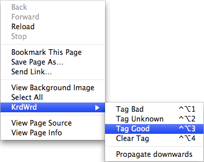

How to Choose the Tag
This section deals with assigning tags. If you want information on how to choose the right tag to assign, go to the Annotation Guidelines.
For tagging a pink-highlighted section as 'good', 'bad', or 'uncertain', you have two options: You can use (1) keyboard shortcuts (hotkeys) or you can use (2) the context menu (rightclick).
- Keyboard Shortcuts
- bad: ctrl+alt+1
- uncertain: ctrl+alt+2
- good: ctrl+alt+3
- clear annotation: ctrl+alt+4
- Context Menu
- Rightclick when you are over the section you want to tag, then choose KrdWrd, and then the tag you want to assign.

- Using the context menu is not recommended, however. It is much more time-consuming to navigate the menu than to use the keyboard shortcuts.
- Note also that if the mouse cursor leaves the menu area, a possibly different part of the page will be highlighted for tagging (namely the part that is now 'under' your mouse).